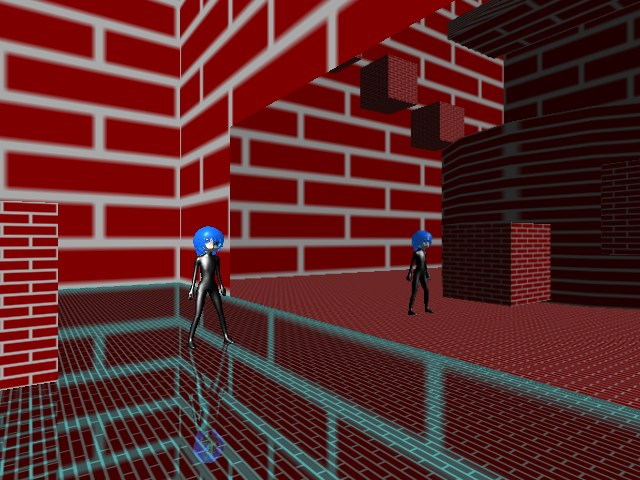
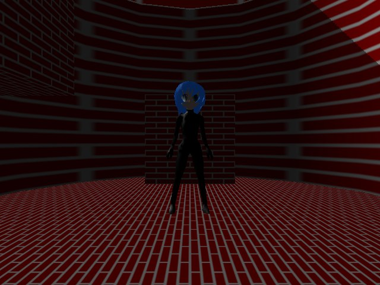
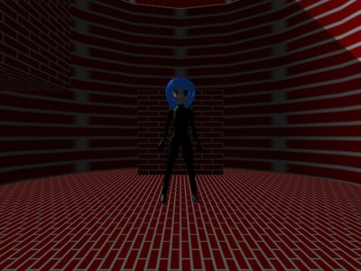
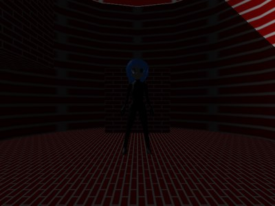

第 10 回
描画先に描いて、後で使う(鏡・影)
この回の目標
- 画面ではない「描画先」(
MakeScreenで作った画像)に描いて、その結果を別の描画のテクスチャとして使える。 - 鏡や影が「2 回描く」ことでできていると分かる。
この回は読む量が多いので、動かして、しくみをつかむことを優先します。
開くサンプル

1. samples/B6_Mirror(鏡)
テンプレート: templates/10a_mirror.dxtemplate
2. samples/B1_3DAction_DepthShadow(影)
テンプレート: templates/10b_shadow.dxtemplate
鏡のしくみ(B6)
B6_Mirror。手前の床(水色の線の所)が鏡で、左のキャラクターが足元に映っています。
- 鏡の面で折り返した位置にカメラを置き、その視点から見た景色を描画先の画像に描く。
- 画面に描くとき、鏡の面の板に 1 の画像を貼る。
- 鏡の板の頂点には、「1 のカメラで見たときの画面の位置」を補助座標(
spos、POSITION1)に入れて渡しています。ピクセルシェーダーは、その位置で 1 の画像を読みます。
影のしくみ(B1。デプスシャドウ)

B1_3DAction_DepthShadow。ライトとの間に物がある所(影)は、明るさが半分になっています。- ライトの位置にカメラを置き、ライトから見た「一番手前の物までの距離(深度)」を描画先の画像に描く(
DepthShadow_Step1PS)。 - 画面に描くとき、画素ごとに「ライトからの距離」を計算し、1 の画像の深度と比べる(
DirLight_DepthShadow_Step2PS)。- 自分のほうが奥なら、ライトとの間に何かがある → 影なので暗くする。
HLSL(シェーダー)if( PSInput.LPPosition.z > TextureDepth + 25.0f ) // 25 は、自分自身を影と間違えないためのずらし量
{
DefaultOutput.rgb *= 0.5f; // 影の所は明るさを半分に
}
- ライトのカメラの行列は、C++ から定数バッファ(b4)で渡しています(02・05 と同じ)。
気をつけること
- 描画先に値を書くシェーダーでは、出力のアルファを 1 にする。モデルを描くときもアルファが合成に使われるので、0 だと何も書き込まれません(仕様書 8.5)。
SetDrawScreenで描画先を変えると、カメラの設定が元に戻ります。描画先を変えたら、カメラを設定し直します。
課題
- ★★10-1鏡の色を変える(鏡の板の頂点の色、またはピクセルシェーダーで色を掛ける)。
- ★★10-2影を濃くする(
0.5fを小さくする)。 - ★★★10-3影の縁のギザギザを確かめ、深度の画像の大きさ(
MakeScreenの大きさ)を変えるとどうなるか試す。
解答例: 10-2 → answers/10_shadow_strength(【課題 10-2】 の所)
解答例を動かした画面

元のサンプル(B1)
answers/10_shadow_strength